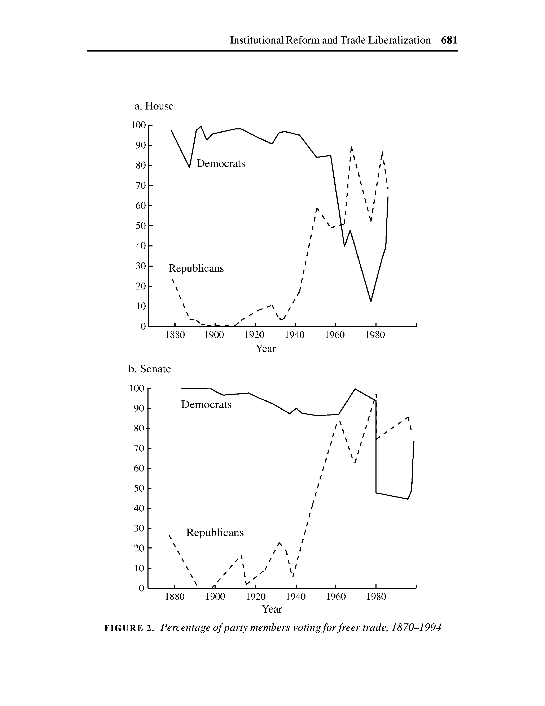

US Foreign Policy
Trade, Investment, and Monetary Policy
Michael Flynn
Professor
Department of Political Science
011C Calvin Hall
meflynn@ksu.edu
2025-11-19
Key Questions
How has the importance of trade to the US economy changed over time?
What is protectionism? What role has it played in the history of US development?
What is the difference between fiscal and monetary policy? How do they relate to one another?
How does an industry’s size relate to its ability to get protectionist policies?
What are the positions of the two major parties been on trade policy? How have they changed over time?
What are some of the major changes in immigration policy across US history?
How has immigration been a tool of US foreign policy?
Key concepts and terms
Trade
Trade: The flow of goods and services between countries
Imports: Goods and services that are consumed within a referent country but produced in another.
Exports: Goods and services that are produced within a referent country for consumption in another.
Aggregation: We can talk about how to group different businesses or products (specific items, technologies, industries, sectors, etc.)
Terminology Key concepts and terms
Finance and Monetary Policy
Finance: Refers to the flow of capital (cash) within and across borders
- Portfolio Investment
- Sovereign Lending
- Foreign Direct Investment (FDI)
Monetary Policy: Refers to the supply and valuation of currency
- Interest rates
- Money supply
Historical Background
Historical Background
Trade before 1934
Protectionism is dominant approach to US economic development
Northeastern manufacturing interests had substantial political influence and favor protectionist policies
Southern and Western agricultural interests less influential and favor freer trade polices.
Historical Background
Trade after 1934
Northeastern and Southern interests align in 1930s and 1940s
Both groups come to support freer trade
Protectionist barriers begin to come down
World War II marks an important turning point

Historical Background
Reciprocal Trade Agreements Act (RTAA) of 1934
Trade Promotion Authority (TPA) granted to executive to negotiate trade agreements
Origin of “fast track” authority
Grants president authority to negotiate reductions in tariffs with other countries
Establishes objectives and places scope parameters on those negotiations
Extended 11 times through 1962
Historical Background
Trade Act of 1974
Further extends fast track authority
Reaffirms Executive power to reduce tariffs without further action
Establishes parameters on Executive negotiations, reporting, and consultation with Congress
Promises an amendment-free vote to reassure negotiators and trading partners
Guarantees vote within fixed period of time
Historical Background
Bretton Woods System
Partly a reaction to pre-World War II move to autarky
Three main components
- General Agreement on Tariffs and Trade (GATT)
- International Monetary Fund (IMF)
- International Bank for Reconstruction and Development (World Bank)

Why Does Trade Matter?
Why Does Trade Matter?
Theoretical
Realism/Mercantilism
Trade as a source of national power
Trade is a zero-sum game
Liberal theory
Trade can be positive-sum (both/multiple players can “win”)
Trade has other beneficial effects (e.g. it promotes peaceful relations between states)
Why Does Trade Matter?
Tangible benefits
Trade creates jobs
Access to desirable goods (spices, cool cars, technology, media/entertainment)
Less tangible
Soft power and prestige
Information, education, etc.
Trade as a Policy Instrument
Trade as a Policy Instrument
Trade can be a source of power—States can use it to get what they want
But how?
Revenue generation
Control over vital resources
Market access (think bargaining)
Trade as a Policy Instrument
Revenue generation
Trade represents the flow of goods and services across borders
These transactions can be taxed!
Revenues can be used for various projects


Trade as a Policy Instrument
Control over vital resources
What types of resources?
Energy (oil, gas, coal, etc.)
Food (grains, meat, etc.)
Strategic minerals (rare earths, metals, etc.)
Necessary for survival of the state, everyday life, etc.
Few substitutes, few alternative suppliers
Labor or capital intensive production processes

Trade as a Policy Instrument
Market access and bargaining
Producers need markets. Scaling up production requires larger markets.
Exports bring in money from the sale of goods
Domestic consumer base is often limited in various ways (money, taste, interests, etc.)
Provides bargaining power


Trade as a Policy Instrument
Does this mean trade is hurting your economy?
No!
Let’s look at how GDP is calculated:
\[GDP_{it} = Consumption_{it} + Investment_{it} + Government_{it} + (Exports_{it} - Imports_{it})\]
Trade as a Policy Instrument
Protectionism and market access
Trade creates winners and losers
Some countries can produce goods more/less efficiently than others
Domestic producers who are relatively inefficient tend to favor protectionism (i.e. government intervention)
Trade as a Policy Instrument
Forms of Protectionism
Trade protection can come in a variety of policy interventions
Tariffs: Taxes on imported goods
Quotas: Limits on how much of a good is imported
Subsidies: Government payments to purchase goods or offset costs of donig business
Health and safety regulations: Creating different standards between importers and exporters

Trade as a Policy Instrument
Example: Sugar Quota System
WTO agreements requires the US to import a minimum of 1,117,195 metric tons of raw sugar from global producers
This is an aggregate figure-it does not have to be distributed evenly across sugar producing states

Trade as a Policy Instrument
What is the benefit to foreign countries?
Dominican Republic share = 189,343 metric tons
World raw sugar price (2025) \(\approx\) 16.39 cents/lb.
US raw sugar price (2025) \(\approx\) 36.87 cents/lb.
Difference = 20.48 cents/lb.
So what?
That’s about $85.5 million more than world market—Nearly 0.7% of the Dominican Republic’s GDP in 2023!

Trade as a Policy Instrument
More recent example: Manufacturing
Some industries are politically powerful for reasons apart from economic salience
Manufacturing sector has a lot of influence
Heavily tied into American image of production and the importance of making things
Early Trump economic policies focused on “reviving” US manufacturing, but was it even in need of resuscitation?


Trade as a Policy Instrument
Conflict between goals
Tariffs and protection can be used for three purposes
Generate revenue
Protect domestic industries
Leverage bargaining power in trade negotiations
But these goals cannot coexist perfectly


Investment and Finance
Investment and Finance
What is it?
US policy towards capital flows (both in and out)
Can include things like
- Stocks
- Bonds
- Larger corporate investment (FDI)
Also concerns actors’ use of US financial system more broadly
Investment and Finance
Investment and finance in US foreign policy
Encouraging foreign investment in the US economy
Encouraging US investment abroad
Using capital flows to fund policy goals
War
Spending programs

Monetary Policy
Monetary Policy
People need money to buy things
Theoretically, we could use all sorts of stuff!
A commonly held/used/accepted currency (e.g. “brand”) of money helps resolve coordination problems
US dollar is widely used and valued, making it a great basis for global commercial exchange
Monetary Policy
A couple of approaches to establishing currency and valuation
Commodity money
Currency backed by a physical good (e.g. gold, silver, etc.)
Historically common, but has limitations (scarcity, divisibility, transportability, etc.)
Fiat money
Currency backed by government decree
Value comes from trust in government and its management of the currency
Monetary Policy
So how do governments manage their money?
For present purposes, let’s focus on two key topics
Money supply
Interest rates

Monetary Policy
Mr. (money) manager
Governments manipulate money and its value through a couple of key mechanisms
Setting interest rates
Buying and selling assets


Monetary Policy
Bonds—How do they work?
Bonds are loans made to the government with the promise of repayment
Bonds have…
- a face or par value (e.g. $1,000),
- a coupon rate (e.g. 5%),
- and a maturity date (e.g. 10 years)
You initially buy a bond for more or less than its face value.
You might buy a savings bond and hold it until maturity, at which point you collect the face value plus interest
Some bonds have fixed interest rates (e.g. 2.5% for 30 years) based on the face value
A bond’s yield is a function of its price and coupon rate
Monetary Policy
Yield Curve
The yield curve shows interest rates across different bond maturities
Normally longer maturities (e.g. 30 year bonds) have higher yields than shorter-term maturities (e.g. 2 year bonds)
When short-term rates are higher than long-term rates, the yield curve is inverted
An inverted yield curve is often a predictor of recession

Monetary Policy
Open Market Operations (OMO)
Central Bank can buy securities, like bonds
Purchases occur on private markets, not directly from the Treasury
Buying up bonds increases liquidity, and pushes interest rates down
Selling bonds reduces liquidity, and pushes interest rates up
Quantitative Easing (QE) is similar
Monetary Policy
Effects of lowering interest rates
Lower rates makes money cheaper and more abundant
Businesses and people will consume more
Increased demand and consumption will drive prices up and unemployment down

Monetary Policy
Liquidity Swaps
The Federal Reserve works with foreign banks to ensure global liquidity
During times of crisis, foreign banks may have trouble getting access to dollars
Fed can set up swap lines to provide dollars to foreign banks
This involves two transactions:
First: Bank of England agrees to sell British Pounds to Fed for US dollars
Second: Bank of England agrees to repurchase its Pounds from the Fed at a later date for US dollars plus interest